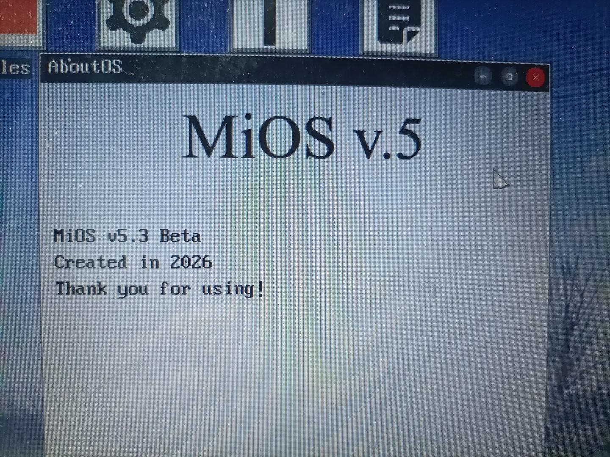
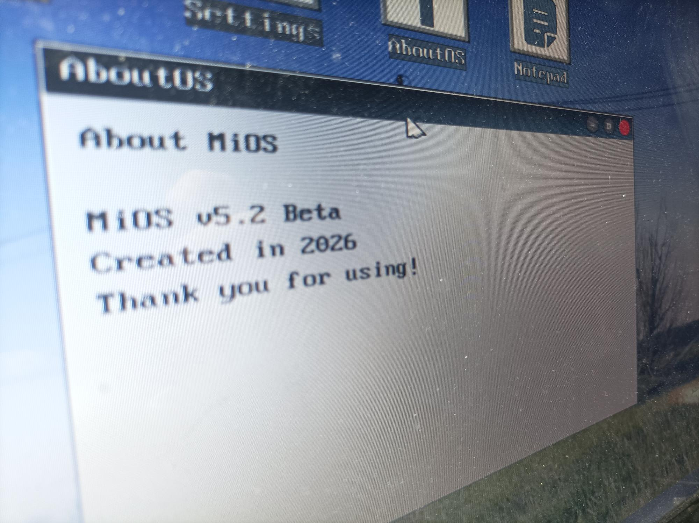
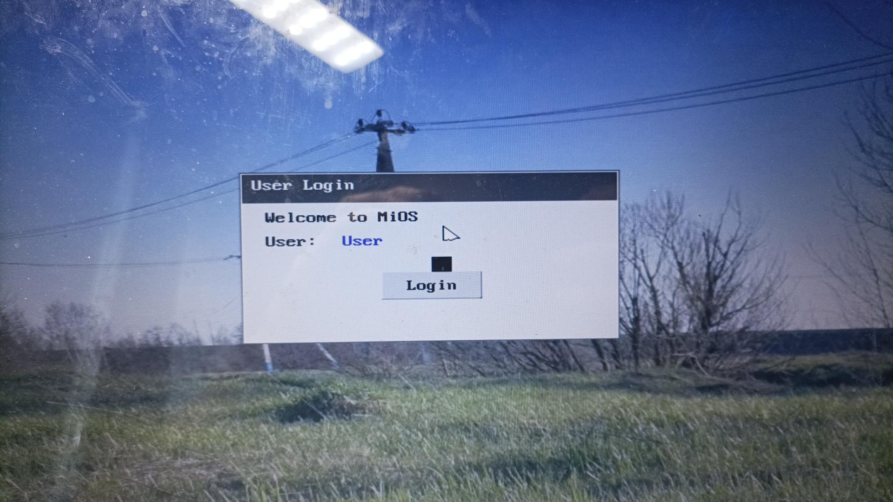

MiOS System
GitHub
Полноценный GUI и оболочка MiDE
в MiOS не так давно был добавлен GUI! MiDE это оболочка рабочего стола для MiOS.
Поддержка PS/2 и USB мыши, а также переписанное на Rust ядро делают MiOS быстрой и надёжной. Внешний вид можно гибко настраивать под себя.

Ядро на ASM, C и Rust
Ранее система писалась на NASM и FASM! сейчас пишется на Rust для повышения безопасности и производительности GUI.
сама система x86/64 (если хотите запустить в Limbo , то ставте архитектуру x64)

Гибкая файловая система
В последних версиях реализована полноценная файловая система FAT32. Ранее в MiOS папака 'MiOS' отвечает за загрузку boot.bin, а kernel (или com.kernel) содержит компоненты для запуска ядра. Удаление критических папок может привести к нестабильной работе.
Папка includes хранит независимые функции для команд, а бета-корень com пока не задействован и может быть удалён без последствий.
Все версии MiOS для скачивания
| Версия | Описание | Скачать |
|---|---|---|
| MiOS 1.0 beta | Первый публичный beta | MiOS 1.0 beta.iso |
| MiOS 2.0 beta | Beta выпуск | MiOS 2.0 beta.iso |
| MiOS 3.0 beta | Первая система с x32 ядром | MiOS 3.0 beta.iso |
| MiOS 4.0 for GRUB beta | Beta версия с использованием GRUB | MiOS for GRUB beta.iso |
| MiOS 4.0 beta | MiOS 4.0 beta | MiOS 4.0 Beta 1.iso |
| MiOS 4.1 beta | beta 4.1 | MiOS 4.1 beta.iso |
| MiOS 4.2 beta | НЕРАБОТАЕТ НА VirtualBox!!! | MiOS 4.2 Beta.iso |
| MiOS 4.3 beta | Теперь работает VirtualBox и добавлен VGA режим | MiOS 4.3 Beta.iso |
| MiOS 4.4 beta | Первые наработки GUI | MiOS 4.4 beta.iso |
| MiOS 5.0 beta | Полноценный GUI, GNU GRUB 2.12 | mios_5_beta.iso |
| MiOS 5.1 beta | Доработанный интерфейс, гибкая настройка | MiOS 5.1 beta.iso |
| MiOS 5.2 beta | Добавлен драйвер USB мыши | MiOS 5.2 beta.iso |
| MiOS 5.3 beta | Добавлена система аккаунтов в системе и иконки приложений | MiOS 5.3 beta.iso |
| MiOS 5.4 beta | Добавлена возможность менять обои и добавлена 1 игра | MiOS 5.4 beta.iso |
Исходный код
| Версия | Описание | Скачать |
|---|---|---|
| MiOS 1.0 NASM BETA 1 | Исходный код первой beta | sourse_cod.zip |
| MiOS 3.0 NASM BETA | Исходный код x32 режима | sourse_cod_mios3.zip |